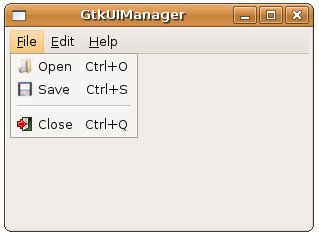

| 使用撰寫程式的方式來建構選單、工具列等使用者介面，過程有時過於繁瑣，您可以使用GtkUIManager從一個或多個使用者介面定義檔讀取介面定義，並自動建立相對應的Gtk元件，使用者介面定義檔是一個XML檔案。 舉個實際的例子來說，可以改寫一下 GtkMenuBar、GtkMenu 與 GtkMenuItem 中的範例，使用GtkUIManager與XML定義檔來作出相同的效果，若XML定義檔如下所示：
<ui> "name"屬性可以讓您在建構程式的時候，依名稱來取得相對應的Gtk元件，而"action"將對應於GtkAction，您可以使用GtkActionEntry來建構GtkAction，GtkActionEntry的定義如下： typedef struct {
const gchar *name; const gchar *stock_id; const gchar *label; const gchar *accelerator; const gchar *tooltip; GCallback callback; } GtkActionEntry; 第一個name成員即對應定義檔中的"name"屬性，其它則為圖示、文字、快速鍵、提示與callback函式，一個設定範例如下： static GtkActionEntry entries[] = {
{ "File", NULL, "_File" }, { "Open", GTK_STOCK_OPEN, "Open", "<control>O", "Open File", G_CALLBACK(itemPressed)}, { "Save", GTK_STOCK_SAVE, "Save", "<control>S", "Save File", G_CALLBACK(itemPressed)}, { "Close", GTK_STOCK_QUIT, "Close", "<control>Q", "Close File", G_CALLBACK(gtk_main_quit)}, { "Edit", NULL, "_Edit" }, { "Cut", NULL, "Copy"}, { "Copy", NULL, "Copy"}, { "Paste", NULL, "Paste"}, { "Help", NULL, "_Help" }, { "About", NULL, "About" } }; GtkAction被組織為GtkActionGrouop，定義了GtkActionEntry之後，您可以使用gtk_action_group_add_actions()函式將之加入GtkActionGroup之中： gtk_action_group_add_actions(actionGroup, entries, 10, NULL);
接著建構GtkUIManager，並使用gtk_ui_manager_insert_action_group()加入GtkActionGroup，然後使用gtk_ui_manager_add_ui_from_file()讀取使用者介面定義檔： GtkUIManager *ui = gtk_ui_manager_new();
gtk_ui_manager_insert_action_group(ui, actionGroup, 0); gtk_ui_manager_add_ui_from_file(ui, "gtk_ui_manager.xml", NULL); GtkUIManager將會自動建構相對應的Gtk元件，並依"action"設定建立相對應的GtkAction。 若要從GtkUIManager中取得元件，則可以使用gtk_ui_manager_get_widget()並依"name"屬性之設定來取得，例如取得"MenuBar"並加入GtkVBox中： GtkWidget *vbox = gtk_vbox_new(FALSE, 5);
gtk_box_pack_start(GTK_BOX(vbox), gtk_ui_manager_get_widget(ui, "/MenuBar"), FALSE, FALSE, 2); 下面的程式是個完整的範例：
#include <gtk/gtk.h> 一個執行的畫面如下所示：  更詳細的GtkUIManager使用，可以參考文件 GtkUIManager，或是gtk-demo中的UI Manager範例。 |